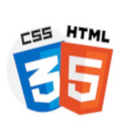

Sobre Mim
Entusiasta de tecnologia e programação, apaixonado por aprender novas linguagens, frameworks e construir soluções criativas para problemas reais.
Tenho experiência em desenvolvimento web, mobile e bancos de dados. Atualmente participo do programa Wise Trainee 6.0 e estou cursando Sistemas de Informações na PUC-PR, atualmente, no quarto período.
Gosto de praticar atividades físicas em meu tempo livre, pesquisar e assistir vídeos sobre novas tecnologias com intuito de estar sempre atualizado com as novas tendencias para trazê-las em cenários reais.
Comecei a estudar programação aos 15 anos, iniciando com Python, onde aprendi os fundamentos da lógica de programação. Com o tempo, passei a estudar Java e Kotlin, focando no desenvolvimento de aplicativos mobile. Mais recentemente, tenho explorado Inteligência Artificial e desenvolvimento web, buscando integrar essas áreas para criar soluções cada vez mais completas e inovadoras.
Busco constantemente expandir meus conhecimentos e resolver novos desafios. Estou sempre aberto a aprender, colaborar em equipes para aplicar minhas habilidades em soluções inovadoras que unem tecnologia e impacto real no ambiente de trabalho.
Minhas Experiências
Linguagens

HTML5 + CSS3
Experiência em criar páginas web, semântica e boas práticas de estilização com CSS.
Java
Experiência em criação de aplicativos para plataforma Android e manipulação de dados com SQLite.
Python
Automação simples de tarefas repetitivas que seguem padrões, análise de dados e desenvolvimento de projetos pessoais com Tkinter.
Kotlin
Desenvolvimento Android nativo com xml e Jetpack Compose juntamente com integração com Firebase, SQLite .
Dart
Experiência básica para criação de aplicativos juntamente com o FLutter.
Bancos de Dados
Firebase
Auth de usuários, realtime database real para guardar e trocar informações e firestore para armazenamento complexo em projetos mobile.
SQLite
Armazenamento local simples em apps Android para persistência de dados do usuário.
MySQL
Modelagem de banco, queries e integração com aplicações web via API em Python(FastAPI).
IDE e Ferramentas
Visual Studio Code
Uso no dia a dia para desenvolvimento web e integração com Git.
Android Studio
Experiência no desenvolvimento mobile nativo com Kotlin e Java.
PyCharm
Utilizado em projetos Python para automação e análise de dados.
intellij
Utilizado em projetos Java para criação de programas desktop com Swing.
Insomnia
Utilizado para testar caminhos e respostas de APIs em projetos.
Gimp
Uso para manipualção de imagens e criação de ícons/backgrounds para meus projetos.
Soft Skills e Aspectos Pessoais
Comunicação
Procuro sempre me expressar de forma clara e objetiva, garantindo que minhas ideias e instruções sejam facilmente compreendidas pela equipe e pelos colegas de trabalho.
Trabalho em equipe
Colaboro ativamente com os colegas, compartilho responsabilidades e estou sempre disposto a ajudar, buscando um ambiente produtivo e harmônico.
Resolução de problemas
Encaro desafios com análise e criatividade, buscando soluções eficientes e aprendendo com cada obstáculo para melhorar resultados futuros.
Adaptabilidade
Sou flexível diante de mudanças e novas situações, ajustando minhas estratégias e aprendendo rapidamente para me manter produtivo e eficiente.
Liderança
Procuro motivar e orientar meus colegas quando necessário, tomando decisões responsáveis e promovendo um ambiente colaborativo e organizado.
Descontração
Sempre tento trazer um bom humor para o ambiente de trabalho com o objetivo de deixar tudo mais leve e fácil de lidar.
Motivação
Ajudar colegas de equipe é mais do que meu dever para mim, estou sempre a disposição para motivar minha equipe em qualquer setor em que existe necessidade, sem exceção.
Bom Ouvinte
Escuto atentamente as ideias, opiniões e feedbacks das pessoas, garantindo que compreendo bem os pontos de vista antes de responder ou tomar decisões. Isso ajuda na colaboração e na resolução de problemas em equipe.
Meus Projetos
Escalas de Trabalho
O Escalas de Trabalho foi desenvolvido com o objetivo de facilitar a vida de quem deseja acompanhar seus dias de folga. Com ele, basta selecionar sua escala de trabalho para visualizar rapidamente os próximos dias livres em qualquer período.
Ver no GitHubBarber Shop Line
Este projeto foi desenvolvido com o objetivo de otimizar o atendimento em barbearias, tornando o processo de espera mais ágil e organizado tanto para os barbeiros(as) quanto para seus clientes. Com o aplicativo, os usuários podem entrar na fila de espera de forma simples e prática, garantindo mais comodidade e eficiência no serviço.
Ver no GitHub
Tabuada
Um jogo simples e dinâmico para treinar a tabuada do 2 ao 10 de forma divertida. Convide seus amigos, desafie-os em diferentes modos de jogo e acumule pontos para alcançar o topo do ranking. Aprender matemática nunca foi tão competitivo e empolgante!
Ver no GitHubContato
Envie um email diretamente para mim: